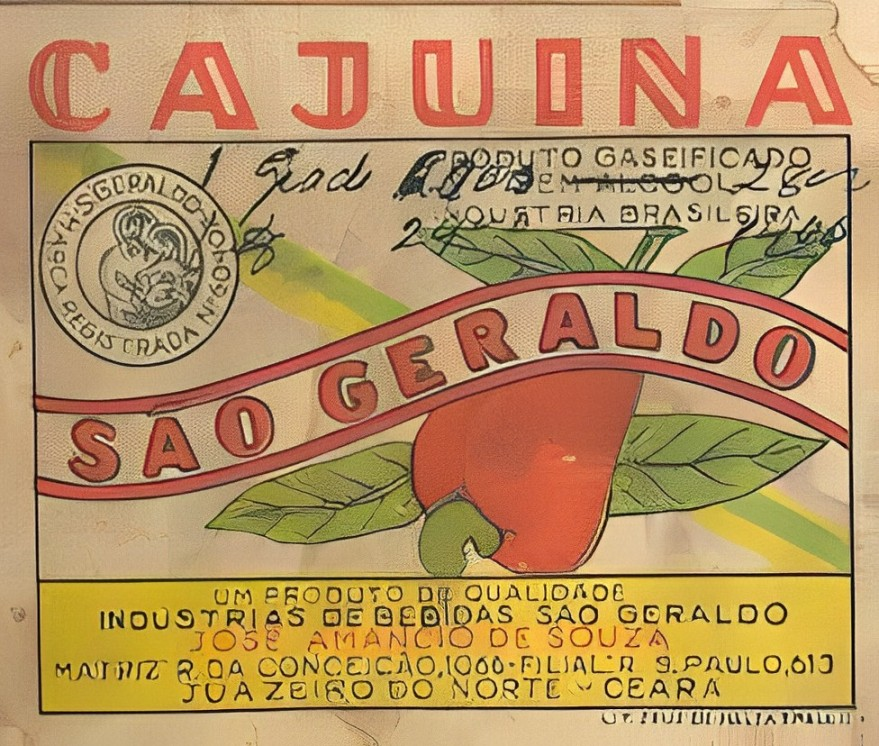

A mais tradicional cajuína direto do pé!
Comprar

História
Bebida derivada do caju, tem origem étnica que remonta a história indígena. Era costume desses grupos a cauinagem, sendo um dos mais importantes rituais dessas populações. O “acaiu” ou açaí-ou (nome tupi do que é conhecido como caju) era ainda componente importante em suas dietas e também no uso medicinal. Grupos indígenas foram os principais responsáveis pela difusão desse vegetal pelo nordeste ao mesmo tempo que impulsionou correntes migratórias desses grupos para esta região do país. Devido ao contato interétnico, supostamente conflituoso, costumes ligados ao modo de fazer da bebida indígena foram parcialmente assimilados por populações não indígenas e em especial por família abastadas, que tinham como praxe oferecer a visitantes, constituindo em um ato de reafirmação de laços familiares e de amizade. É nesse contexto que a bebida passa a ser denominada cajuína. Outras atualizações são de cunho mercadológico e tem alterado traços significativos do modo de fazer tradicional da cajuína.
Produção
Extração do suco
O mais recomendado é o uso de uma prensa descontínua, do tipo parafuso. As partes que entram em contato com os pedúnculos jamais podem ser fabricadas em aço-carbono. Neste caso, recomendam-se cilindros e placas em aço inoxidável.
Clarificação
A clarificação é realizada utilizando-se a gelatina comercial grau alimentício adicionada na forma de solução aquosa em uma concentração a 10%. Alternativamente, essa etapa pode ser feita através de membrana de ultrafiltração, sem uso de proteína animal.
Filtração
Pode ser realizada utilizando-se filtros de tecido de algodão, feltro ou de um material conhecido comercialmente como TNT (tecido não tecido).
Tratamento térmico
As garrafas devidamente cheias e fechadas são submetidas a um banho-maria, para promover a esterilização comercial do produto, aumentando sua durabilidade, e a caramelização dos açúcares, que faz com que o produto atinja a a coloração amarelo-âmbar, característica da cajuína.
7 Curiosidades sobre a cajuína
- Existem relatos sobre o que poderia ser a primeira experiência da Cajuína feita por indígenas que produziam o mocororó, que é a água de caju fermentada, ainda no período Colonial.
Contudo, a versão oficial, e na forma que conhecemos a cajuína hoje, só foi criada no ano de 1900, pelo farmacêutico baiano Rodolfo Teófilo. - Rodolfo Teófilo inventou a Cajuína para combater o alcoolismo, visto que a bebida poderia substituir a cachaça em encontros sociais e poderia ser desfrutada em momentos de solidão.
- Apesar de não conter álcool, a Cajuína é consumida com várias bebidas alcóolicas.
- De tão famosa, a bebida virou tema da canção “Cajuína”, de Caetano Veloso, que faz uma homenagem à receita típica e à capital do Piauí, Teresina
- Cajuína é rica em Vitamina C e A que trazem benefícios para o sistema imunológico. Assim, a bebida é capaz de auxiliar na prevenção a gripes e resfriados.
- O Piauí é o estado brasileiro que mais produz cajuína. No ano de 2018, por exemplo, mais de 10 milhões de litros foram produzidos. A cidade de Santo Antônio de Lisboa, é conhecida como a capital do caju e da cajuína.
- Se lhe oferecerem cajuína, pode ter certeza que gostam muito de você e sentem prazer em lhe receber.